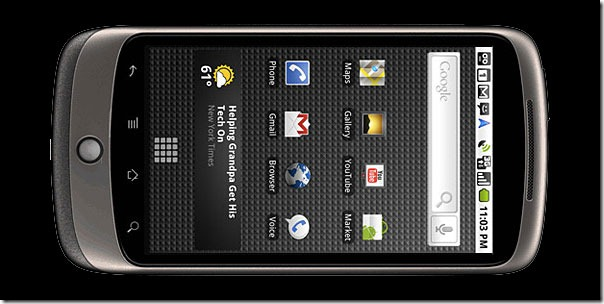

Since Adobe have released the new mobile version of Flash many people have been comparing the performance of Android 2.2 devices with the iPhone.
For example:
Poor Performance Of Flash Player 10.1 On Droid 2 Justifies Apple's Decision To Not Allow Flash On The iPhone
Speed Tests Show Flash 10.1 Slowing Down Android 2.2 Significantly Adobe Flash Player 10.1 on Android: Slow
Flash slows down Android
This is one of the primary things people are seeing, testing and complaining about. In my opinion, the tests are completely baseless and people are being misled. Here is why:
- First off, you can't share the same Wi-fi network across two or three devices and expect each of them to get equal bandwidth sharing.
- When you go to a website that has Flash content, then Flash player will have to download this content. This content, however, was not made for a mobile device (I'm talking about ads and such). So while the iPhone gets a simple image in place of Flash content, the Android device needs to download much larger content.
- In addition to the content, the device has to download the specific swf file, which again was never made for a mobile device
- The swf has to be initialized and run which means the device running Flash content has to do a lot more work than the iPhone that simply loaded an image and moved on.
Is Flash right for Mobile
Well that depends. If the site's you visit are free from Flash based ads then having the ability to render Flash content is a God send. But if the sites you visit make use of a lot of Flash based ads and animations, then you'd wish you didn't have Flash. I think user expectation should be managed and of course people who claim to be "testing" should refrain from misleading folks, no matter what their intent. Flash Mobile and Video Since I've not done any tests on Flash mobile, I can't be absolutely sure, but going from past experience (on the desktop and having tested Flash player against Windows Media Player and Quick time player) I would hesitate a guess that Flash Mobile eats quite a bit more CPU while playing video than would, say the quick time player on iPhone/iPad or the media player on a Windows Phone 7 device.
Note
I'm not a huge fan of Flash. I like it, but it has it's flaws. Nor am I a huge fan of Apple or the iPhone, in fact I don't like how Steve Jobs slanders Flash because his claims are baseless and ones that fool only those who want to be. On the other hand I don't believe Adobe is blameless either. Having used Adobe products for many years, I've had the displeasure of dealing with many bugs with Flash and Flex/Flash builder with absolutely no response nor fixes in sight.